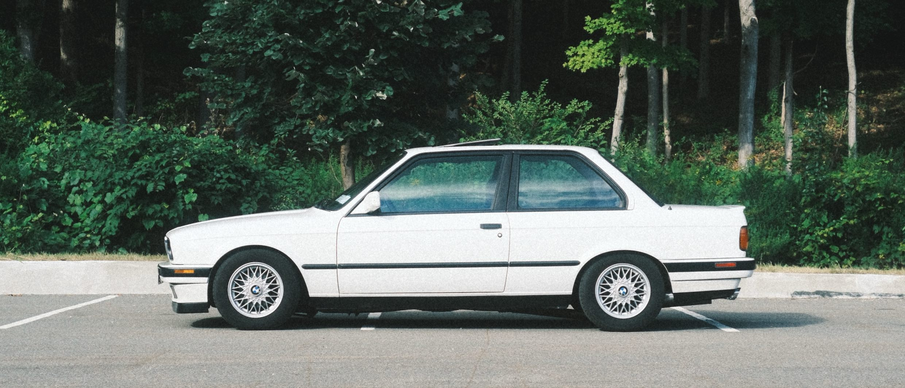

Coolant leak
Fixed by tightening the clamp on the hose going into the radiator.

№ 325is Modelljahr 1990 · Typ E30
1990 BMW 325is
Preserved, not modified.
Maintenance
Odometer 201,043 mi
01
Dieter spent its first years in Virginia and came north in 2018 with its second owner — a Southern car with the one thing New England E30s almost never have: a clean, dry underside.
The owner who brought it north put roughly $10,000 in parts into it in that first year alone, and more across the years that followed — sorting, refreshing, and future-proofing rather than chasing horsepower. It has been mechanically sound ever since. Cold mornings, long drives, errands on a clear day — it just works.
At 195,000 miles the M20 was treated to a full engine rebuild after the piston rings showed signs of blow-by. $5,500 in engine parts later, it was ready for another 195,000.
I bought it at 200,800 miles. It is exactly what an E30 should be: light, honest, and analog — an oven timer has more computing power than this car.
The upgrades are deliberate — an E46 ZHP steering rack for quicker, more communicative steering and a better daily-driver feel, paired with a Z3 short shifter that makes it OEM+ and stupid fun on the twisty roads.
On a sunny 75º day with the windows down, sunroof open, and third gear on a favorite twisty road, it is the best medicine for a bad day. Nobody gets out of it without a smile. Motoring therapy.
02
03
04
Sep 2026
Blown fuse in the fuse box replaced with a new 30 amp; the lighter has power again.
Sep 11, 2026 · 201,043 mi
Transmission secured to its studs, and the driveshaft center bearing — found hanging by one stud — remounted; together they caused the grinding and vibration. Rear shifter support remounted. (Bimmers Only)
Sep 11, 2026 · 201,043 mi
Selector shaft seal and rear output seal replaced; both were leaking. Drained and refilled with new oil. (Bimmers Only)
Sep 11, 2026 · 201,043 mi
Leak fixed and fit corrected: pipes heated and bent to align, center mount refabricated, rubber hanger fitted. (Bimmers Only)
Sep 11, 2026 · 201,043 mi
Disassembled and adjusted. (Bimmers Only)
Sep 2026
The original broke and the OEM part is no longer available, so an aftermarket clip went in; the lighter mounts properly again.
Sep 2026
Tightened at the radiator inlet; stopped a slow coolant leak.
Nov 24, 2024 · 198,403 mi
Replaced; the previous filter dated to roughly May 2016.
Jun 2023
Replaced with a factory BMW part.
Apr 2023 · 195,514 mi
New main & rod bearings · new head gasket · all oil seals replaced · replaced the cylinder head (original had camshaft journal scoring) · rebuilt oil pump · pistons cleaned · new piston rings · new timing belt · so much more. Ready for another 195,000 miles.
Mar 2023
Replaced.
Jun 2022
Replaced.
Jan 2019 – Nov 2021
Seven changes on record, at 177,853 · 180,968 · 184,457 · 188,521 · 191,200 · 192,514 · 193,772 mi. Fresh oil again with the 2023 rebuild.
Oct 25, 2021
Valve cover gasket, camshaft plugs, and valves adjusted to spec.
Oct 10, 2019 · 186,156 mi
Both hydraulic cylinders replaced.
Aug 30, 2019 · 184,457 mi
Gearbox drained and refilled.
Aug 25, 2019
Timing belt, water pump, timing cover gasket, crankshaft seal, intermediate shaft seal, camshaft seal & o-ring all serviced. The camshaft seal & o-ring cured the oil leak on the front of the engine.
May 2019
Driveshaft, flex disc (guibo), center support bearing, output shaft seal and selector rod seal replaced.
Nov – Dec 2018
All four brake calipers replaced · discs & rotors front and rear · master brake cylinder on 7 December (replaced by Ultimate Bimmer Services).
Nov 21, 2018
New thermostat fitted.
Oct 2018
Alternator, power steering, and A/C compressor belts replaced.
Driver’s and passenger door lock mechanisms rebuilt.
Missing OEM handle replaced.
Handbrake switch reconnected · solder reflowed for the 220 Ω resistor on the brake-lining bulb circuit.
Replaced; seat adjustments fully functional again.
Rear ski pass-through added.
New plastic plug and o-ring in the LSD; speedometer restored.
Worn original replaced with a new factory piece.
Closes the gap US cars left above the low beams; the nose reads as one continuous band.
Brighter with a sharper cutoff than the US sealed beams; the curved lower trim earns the nickname.
Knob and boot come as one factory unit rather than two separate pieces, so there is no seam or loose boot collar at the base.
Sets into the top of the knob: five-speed shift pattern with M Technic stripes.
Anthracite, with BMW lettering across the driver’s-side heel pad.
Fills the recessed rear plate area for a cleaner, uninterrupted tail.
A minimal surround; far less frame shows around the plate than a standard one.
350 mm, smaller than the factory wheel for quicker, more direct steering. Momo horn button swapped for a Renown BMW button.
Quicker steering ratio for a more nimble, modern daily-driver feel. Installed by Ultimate Bimmer Services, Nashua, NH.
Tighter, more precise throws; shift linkage rebuilt at the same time.
Super-aggressive: -2.2" front / -2.1" rear; far less body roll, corners flatter and faster.
Front and rear strut supports plus chassis X-brace for added rigidity.
Throaty outside, mild inside; 409 stainless cat-back with a CARB-legal direct-fit cat.
Period-correct 14-inch basket weaves sourced and refurbished; summer tires fitted.
Factory CM5908 radio refurbished by Cantaloupe Radio, with a Cantaloupe Bluetooth module installed.
The cup holder the E30 never had; billet aluminum, and the arm ratchets into position.
05
Fixed by tightening the clamp on the hose going into the radiator.
Caused by the driveshaft center bearing hanging by one stud and the transmission not fully secured to its studs. Both remounted at Bimmers Only.
Aftermarket clip fitted; the lighter mounts properly again.
A blown fuse; replaced, and the lighter works again.
A leaking seal at the top of the steering rack. No replacement seal is made; Lucas Oil Power Steering Stop Leak added, now waiting to see whether it holds.
Fan operates; no cold air. Most likely wants a conversion to modern refrigerant.
Does not currently function. Common, well-documented E30 fix.
Very, very little, and cosmetic only.
The front passenger corner of the hood has a small area where the clear coat has come off.